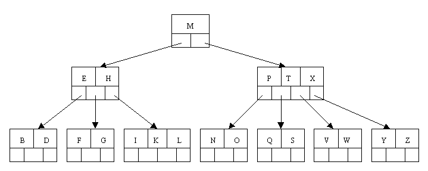

Software Design Using C++
B-Trees
Introduction
A B-tree is a specialized multiway tree designed especially for use on disk. In a B-tree each node may contain a large number of keys. The number of subtrees of each node, then, may also be large. A B-tree is designed to branch out in this large number of directions and to contain a lot of keys in each node so that the height of the tree is relatively small. This means that only a small number of nodes must be read from disk to retrieve an item. The goal is to get fast access to the data, and with disk drives this means reading a very small number of records. Note that a large node size (with lots of keys in the node) also fits with the fact that with a disk drive one can usually read a fair amount of data at once.
Definitions
A multiway tree of order m is an ordered tree where each node has at most m children. For each node, if k is the actual number of children in the node, then k - 1 is the number of keys in the node. If the keys and subtrees are arranged in the fashion of a search tree, then this is called a multiway search tree of order m. For example, the following is a multiway search tree of order 4. Note that the first row in each node shows the keys, while the second row shows the pointers to the child nodes. Of course, in any useful application there would be a record of data associated with each key, so that the first row in each node might be an array of records where each record contains a key and its associated data. Another approach would be to have the first row of each node contain an array of records where each record contains a key and a record number for the associated data record, which is found in another file. This last method is often used when the data records are large. The example software will use the first method.
What does it mean to say that the keys and subtrees are "arranged in the fashion of a search tree"? Suppose that we define our nodes as follows:
|
Then a multiway search tree of order 4 has to fulfill the following conditions related to the ordering of the keys:
|
A B-tree of order m is a multiway search tree of order m such that:
|
A B-tree is a fairly well-balanced tree by virtue of the fact that all leaf nodes must be at the bottom. Condition (2) tries to keep the tree fairly bushy by insisting that each node have at least half the maximum number of children. This causes the tree to "fan out" so that the path from root to leaf is very short even in a tree that contains a lot of data.
Example B-Tree
The following is an example of a B-tree of order 5. This means that (other that the root node) all internal nodes have at least ceil(5 / 2) = ceil(2.5) = 3 children (and hence at least 2 keys). Of course, the maximum number of children that a node can have is 5 (so that 4 is the maximum number of keys). According to condition 4, each leaf node must contain at least 2 keys. In practice B-trees usually have orders a lot bigger than 5.

Operations on a B-Tree
Question: How would you search in the above tree to look up S? How about J? How would you do a sort-of "in-order" traversal, that is, a traversal that would produce the letters in ascending order? (One would only do such a traversal on rare occasion as it would require a large amount of disk activity and thus be very slow!)
Inserting a New Item
According to Kruse (see reference at the end of this file) the insertion algorithm proceeds as follows: When inserting an item, first do a search for it in the B-tree. If the item is not already in the B-tree, this unsuccessful search will end at a leaf. If there is room in this leaf, just insert the new item here. Note that this may require that some existing keys be moved one to the right to make room for the new item. If instead this leaf node is full so that there is no room to add the new item, then the node must be "split" with about half of the keys going into a new node to the right of this one. The median (middle) key is moved up into the parent node. (Of course, if that node has no room, then it may have to be split as well.) Note that when adding to an internal node, not only might we have to move some keys one position to the right, but the associated pointers have to be moved right as well. If the root node is ever split, the median key moves up into a new root node, thus causing the tree to increase in height by one.
Let's work our way through an example similar to that given by Kruse. Insert the following letters into what is originally an empty B-tree of order 5: C N G A H E K Q M F W L T Z D P R X Y S Order 5 means that a node can have a maximum of 5 children and 4 keys. All nodes other than the root must have a minimum of 2 keys. The first 4 letters get inserted into the same node, resulting in this picture:
When we try to insert the H, we find no room in this node, so we split it into 2 nodes, moving the median item G up into a new root node. Note that in practice we just leave the A and C in the current node and place the H and N into a new node to the right of the old one.
Inserting E, K, and Q proceeds without requiring any splits:
![[B-tree]](btree_alt_cpp_fichiers/btreec.gif)
Inserting M requires a split. Note that M happens to be the median key and so is moved up into the parent node.
The letters F, W, L, and T are then added without needing any split.
When Z is added, the rightmost leaf must be split. The median item T is moved up into the parent node. Note that by moving up the median key, the tree is kept fairly balanced, with 2 keys in each of the resulting nodes.
The insertion of D causes the leftmost leaf to be split. D happens to be the median key and so is the one moved up into the parent node. The letters P, R, X, and Y are then added without any need of splitting:
Finally, when S is added, the node with N, P, Q, and R splits, sending the median Q up to the parent. However, the parent node is full, so it splits, sending the median M up to form a new root node. Note how the 3 pointers from the old parent node stay in the revised node that contains D and G.
Deleting an Item
In the B-tree as we left it at the end of the last section, delete H. Of course, we first do a lookup to find H. Since H is in a leaf and the leaf has more than the minimum number of keys, this is easy. We move the K over where the H had been and the L over where the K had been. This gives:
Next, delete the T. Since T is not in a leaf, we find its successor (the next item in ascending order), which happens to be W, and move W up to replace the T. That way, what we really have to do is to delete W from the leaf, which we already know how to do, since this leaf has extra keys. In ALL cases we reduce deletion to a deletion in a leaf, by using this method.
Next, delete R. Although R is in a leaf, this leaf does not have an extra key; the deletion results in a node with only one key, which is not acceptable for a B-tree of order 5. If the sibling node to the immediate left or right has an extra key, we can then borrow a key from the parent and move a key up from this sibling. In our specific case, the sibling to the right has an extra key. So, the successor W of S (the last key in the node where the deletion occurred), is moved down from the parent, and the X is moved up. (Of course, the S is moved over so that the W can be inserted in its proper place.)
![[B-tree]](btree_alt_cpp_fichiers/btreek.gif)
Finally, let's delete E. This one causes lots of problems. Although E is in a leaf, the leaf has no extra keys, nor do the siblings to the immediate right or left. In such a case the leaf has to be combined with one of these two siblings. This includes moving down the parent's key that was between those of these two leaves. In our example, let's combine the leaf containing F with the leaf containing A C. We also move down the D.
Of course, you immediately see that the parent node now contains only one key, G. This is not acceptable. If this problem node had a sibling to its immediate left or right that had a spare key, then we would again "borrow" a key. Suppose for the moment that the right sibling (the node with Q X) had one more key in it somewhere to the right of Q. We would then move M down to the node with too few keys and move the Q up where the M had been. However, the old left subtree of Q would then have to become the right subtree of M. In other words, the N P node would be attached via the pointer field to the right of M's new location. Since in our example we have no way to borrow a key from a sibling, we must again combine with the sibling, and move down the M from the parent. In this case, the tree shrinks in height by one.
Another Example
Here is a different B-tree of order 5. Let's try to delete C from it.
We begin by finding the immediate successor, which would be D, and move the D up to replace the C. However, this leaves us with a node with too few keys.
Since neither the sibling to the left or right of the node containing E has an extra key, we must combine the node with one of these two siblings. Let's consolidate with the A B node.
But now the node containing F does not have enough keys. However, its sibling has an extra key. Thus we borrow the M from the sibling, move it up to the parent, and bring the J down to join the F. Note that the K L node gets re-attached to the right of the J.
A B-Tree Example
The following is a completely coded example. There are two programs: btmake to create a B-Tree table and btread to allow the user to look up (read) items from a B-Tree table. In this example, each key is a word and the associated data is the definition of the word. The coding details are rather complicated. See the Kruse book from the references section for some of the details, but be aware that our example does not follow that book's code in all respects. You might want to compare this example to our List-Based Table example and to our Binary Search Tree Based Table example.
|
In the same file you will find the class declaration for BTTableClass. Note that there are four data fields listed: the record number for the root node, the count of how many nodes are in the B-Tree, the number of bytes per node (needed whenever we do input/output of a node), and a field to hold the entire current node that we are working with. This last field gives us a handy place to put the node data that we are working on at any given point. Remember that objects of this class inherit three data fields from the abstract base class: the file stream, the number of items (consisting of a word and its definition) in the table, and a character indicating if we opened the table in read or write mode. You can see many of the details of one of these objects and its associated data file in a separate drawing. If you prefer, use the larger version of this drawing.
Note how the definition of DEBUG can be commented off in btree.h. Make sure it is uncommented if you want to run the debugging code that has been included. Look at the functions Dump, Check, and CheckSubtree for further details. In btmake.cpp note how the Load function checks to see if DEBUG has been defined and if so, executes certain debugging code. Even in btree.cpp there is some debugging code that is conditionally compiled depending on whether or not DEBUG is defined. Here, the debugging code prints a dump of the whole B-Tree when the program ends and during the program prints a single letter at key points as a sign of what operation is being performed. The letters and their meanings are as follows:{kind=link}
{kind=link}
|
Variations
According to Shaffer (see the references at the end of this file), the B-tree and variations on it are commonly used in large commercial databases to provide quick access to the data. In fact, he says that they are "the standard file organization for applications requiring insertion, deletion, and key range searches". The variant called the B+ tree is the usual one. Another variant is the B* tree, which is very similar to the B+ tree, but tries to keep the nodes about two-thirds full at a minimum.
In a B+ tree, data records are only stored in the leaves. Internal nodes store just keys. These keys are used for directing a search to the proper leaf. If a target key is less than a key in an internal node, then the pointer just to its left is followed. If a target key is greater or equal to the key in the internal node, then the pointer just to its right is followed. The leaves are also linked together so that all of the keys in the B+ tree can be traversed in ascending order, just by going through all of the nodes in this linked list along the bottom level of the tree.
When a B+ tree is implemented on disk, it is likely that the leaves contain key, pointer pairs where the pointer field points to the record of data associated with the key. This allows the data file to exist separately from the B+ tree, which functions as an "index" giving an ordering to the data in the data file. This is how B+ trees are used in a database. Of course, the pointers are record numbers, our typical fake pointers used when creating dynamic data structures on disk. Notice that this B+ tree indexing scheme allows one data file to have several such indices, each giving an ordering by a different key field, something highly desirable to have.
As an example, consider a B+ tree of order 200, whose leaves can each contain up to 199 keys (approximately 200). Let's assume that the root node has at least 100 children (though we know it is allowed to have as few as two). A 2 level B+ tree that meets these assumptions can store up to about 10,000 records, since there are at least 100 leaves, each containing at least 99 keys (approximately 100). A 3 level B+ tree of this type can store up to about 1 million keys. A 4 level B+ tree can store up to about 100 million keys. To get faster access to the data, the root node is commonly kept in main memory. Maybe even the child nodes of the root can fit in main memory. Thus one can find one of 100 million keys with only 2 or 3 disk reads. If, as is common, the associated data records are stored in a separate file, there is one additional read to get the data associated with a key. Also, note that if the root node has fewer that our assumed 100 children, this slows down the lookup further.
References:
|